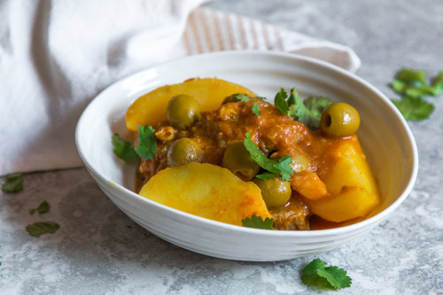
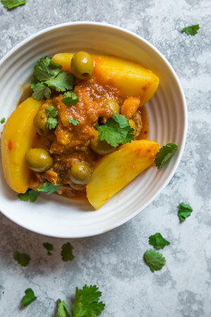
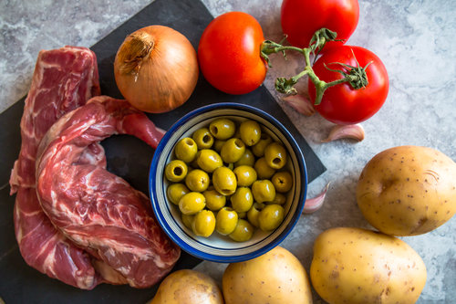
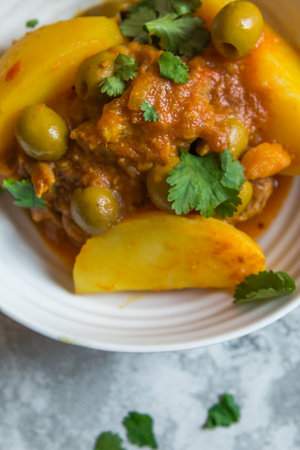
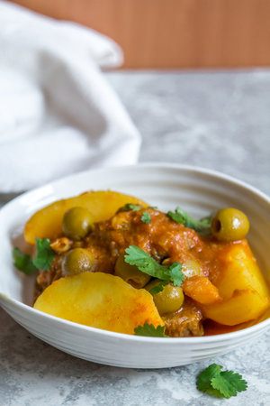

LAMB, POTATOES AND OLIVES TAGINE

Spring is here, yay! It makes me unreasonably happy. I am so grateful for spring this year because last year, I didn’t really get to make the best out of the “spring” weather and food. This time last year, I was almost 9 months pregnant and pretty much stuck in bed. Then, our w o n d e r f u l Laelia arrived but you know what followed: sleepless nights and no time to cook or shower. Our situation is very different this year and I’ve got so many exciting food related plans for spring. My belly cannot wait.

Tagine dial batata wa zitoun. This is how we call this tagine in Morocco. It’s a classic tagine, every Moroccan would have tried it at least once throughout the course of their life. My mom used to make it pretty often when we were kids, I think it was her go-to tagine when she wasn’t inspired, it’s ok, it happens to the best of us. I am aware it is not the most spring-material recipe but it is good and tasty and easy and so satisfying… Enjoy!



INGREDIENTS
- 2 tablespoons olive oil
- 1 large onion, sliced
- 3 garlic cloves, peeled and crushed
- 1,2 kg lamb neck fillets (or any type of stewing meat) trimmed and cut in 5 cm pieces
- 300 ml vegetable stock or water
- 3 tomatoes, grated
- 1 teaspoon turmeric
- 1 teaspoon ginger
- 1 teaspoon paprika
- ½ teaspoon cumin
- ½ teaspoon salt, or more to taste
- 1 kg potatoes, peeled in cut into wedges
- 200 gr green olives drained
- Chopped coriander for garnish
METHOD
- In a large saucepan, heat the olive oil and add the onions over medium heat. Cover with a lid and leave the onions until they are soft and translucent, about 10 min. This will allow sweating the onions. Once you’ve sweated the onions, add the garlic and the meat. Cook for 7 min turning the meat occasionally to lightly brown it
- Add in the vegetable stock or water, tomatoes, spices and salt and bring to the boil. Cover with a lid and reduce the heat to medium-low. Leave to simmer gently for 1h30 to 2 hours or until the meat is almost cooked and separates easily. Stir occasionally. If at any point throughout cooking it looks like there are not enough liquids in the saucepan, add in a few tablespoons of water.
- Add the potato wedges in the saucepan pushing them into the liquid and cover with a lid. Leave to simmer until the potatoes are soft and cooked, about 20 minutes. Uncover and transfer in the olives. Give a gentle stir to the content of the saucepan and simmer for 5 minutes. Taste and adjust the seasoning with salt if necessary. Serve immediately with bread.